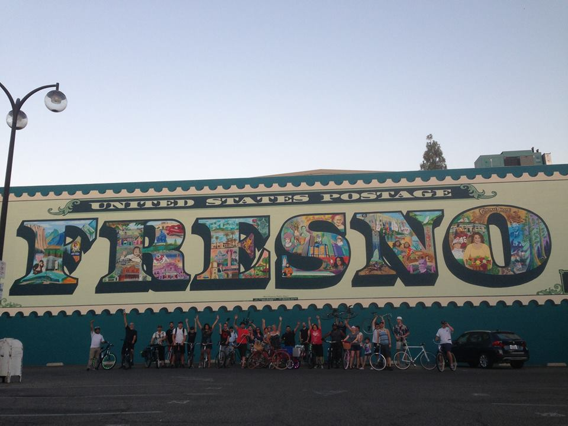

Aloha. Where I have been and where I am going.
My first job was removing ceramic molding for rubber tamplates in 100(F) temperatures during the summer. I was 12 years old. Soon I upgrading to working at Clovis Lakes throwing trash and various other labor for the maintainence department. When I graduated from high school I became a forklift champion working in a warehouse. In the meantime I played in bands because music was about all I cared about.
At 21 I moved to Maui; it was time to start living. During that period I worked in restaurants starting out a a dishwasher, and moved my way up to expediter and bartendar. I also met my future wife there. From there I moved to San Fancisco in order pursue music. Carey (my wife) refused to pay another cent of overpriced rent, so we moved to her home town of Richmond, Va. For the next several years I apprencticed and became become a journeyman sheetmetal mechanic...then one day it happened. I went back to school.
Starting our at J. Sargent Reynolds I began to take classes and had my first child. After two years I started the VCU mechanical engineering program, and had my second child. I graduated with honors with a mechanical engineering degree, and a minor in mathematics. While in school I worked with a mathematics program called MatLab, which is a funciton orentied programming enviroment that allow you to solve complex systems. It is somewhat similar to Python. I really enjoyed coding. The whole process is very fullfilling. Since engineering by it's very nature can be a laboious grind that dosen't provide much of atristic implementation. Building websties has given me a opportunity to do something creative and analytical.